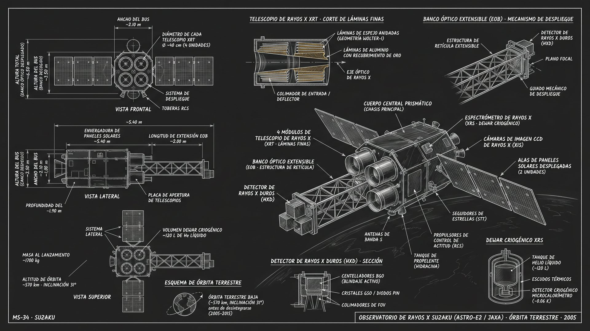

Suzaku (ASTRO-E2)

Observó el cielo en rayos X durante diez años, cinco veces su vida prevista, y midió el espín de agujeros negros supermasivos. Japón la dirigió; la NASA puso los telescopios.
Observatorio de rayos X de JAXA: una malfunción en junio de 2015 llevó al fin de la misión el 26 de agosto de 2015 y a su reentrada atmosférica, con destrucción total, el 5 de enero de 2025. Personas: Robert Petre, Aurora Simionescu, Hiroya Yamaguchi
Lo que hizo
- Mi encargo — Observar el universo en rayos X con un rango enorme, de 0,2 a 600 keV, con cuatro cámaras CCD y un detector de alta energía. Me lanzaron el 10 de julio de 2005 como ASTRO-E2.
- El criógeno perdido — Mi espectrómetro de microcalorímetro XRS perdió todo su criógeno antes de empezar las observaciones rutinarias y el instrumento quedó inutilizado. Seguí trabajando con las cámaras CCD.
- Diez años de vida — Aguanté diez años, cinco veces mi vida prevista, y JAXA declaró completa la misión el 26 de agosto de 2015. El 5 de enero de 2025 me desintegré al reentrar en la atmósfera.
Modelo 3D, chat y cómic, en tres idiomas
Fuentes
- science.nasa.gov/mission/suzaku/
- heasarc.gsfc.nasa.gov/docs/suzaku/news/endofmission.html
- www.nasa.gov/universe/suzaku-finds-common-chemical-makeup-at-largest-cosmic-scales/
Ver el índice completo · Proyecto del NASA Space Apps Challenge 2026. Contenido con fuentes citadas.